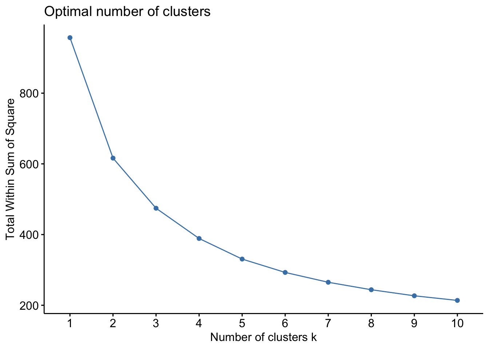

library(tidyverse)
library(factoextra)
library(ggpubr)
library(janitor)
library(plotly)
library(RColorBrewer)
library(gt)
library(gtExtras)
theme_set(theme_bw())
# Reading in the data
wwc_passes <- read_csv("https://raw.githubusercontent.com/36-SURE/2025/main/data/wwc_passes.csv")
## Cleaning the data
# Cleaning the names
wwc_passes <- wwc_passes |>
clean_names()
# Replacing NAs with FALSE for pass columns
wwc_passes_2 <- wwc_passes |>
select(under_pressure, counterpress, pass_switch:pass_miscommunication)
wwc_passes_2[is.na(wwc_passes_2)] <- FALSE
wwc_passes[c(5, 6, 11:23)] <- wwc_passes_2
# Replacing NAs in pass outcomes with "Complete"
wwc_passes_3 <- wwc_passes |>
select(pass_outcome_name) |>
mutate(pass_outcome_name = ifelse(is.na(pass_outcome_name == TRUE),
"Complete", pass_outcome_name))
wwc_passes[28] <- wwc_passes_3
# Removing "Women's" for the teams
wwc_passes <- wwc_passes |>
mutate(team_name = str_remove_all(team_name, " Women's"))
# Adding a "knockout_stage" column to differentiate between playoff and non-playoff teams
wwc_passes <- wwc_passes |>
mutate(knockout_stage = ifelse(team_name %in% c("Switzerland", "Spain",
"Netherlands", "South Africa",
"Japan", "Norway",
"Sweden", "United States",
"Australia", "Denmark",
"France", "Morocco",
"England", "Nigeria",
"Colombia", "Jamaica"),
TRUE, FALSE))
# Adding game number
wwc_passes <- wwc_passes |>
group_by(team_name) |>
mutate(
prev_period = lag(period),
# start of a new game
new_game = if_else(period == 1 & lag(period) %in% c(2, 3, 4), 1, 0),
new_game = replace_na(new_game, 1),
# game numbers
game = cumsum(new_game) +1
) %>%
select(game, everything(), -prev_period, -new_game)Clustering 2023 WWC players by their passing archetypes
By: Luke Snavely and Zachary Pipping
Overview:
This project aims to cluster players in the 2023 Women’s World Cup by their passing completion rates, ability to successfully pass under pressure, and their average pass lengths. Utilizing k-means, the analysis results in five distinct clusters, with a range of passing abilities. Note that all data was derived from StatsBomb.
Initial data cleaning
Clustering process
When filtering through the data set, there are multiple variables we could cluster by. However, we chose three variables:
- Passing completion rate
- The average percentage of passes completed over all games played by the player.
- Passing completion rate under pressure
- The average percentage of passes with pressure completed over all games played by the player. Pressure is defined as an opposing player defending the attacking player closely when the pass occurs.
- Pass length
- The average distance (in meters) for player passes.
## Clustering
# Note: filtering out all goalkeepers because passing patterns are different than field players
player_stats <- wwc_passes |>
filter(position_name != "Goalkeeper") |>
group_by(player_name, team_name) |>
summarize(pressure_rate = round((sum(under_pressure == TRUE)/n() * 100), 2),
pass_completion_rate = round((sum(pass_outcome_name == "Complete")/n() * 100), 2),
pass_completion_up = round((sum(under_pressure == TRUE & pass_outcome_name == "Complete")
/ sum(under_pressure == TRUE) * 100), 2),
passes_attempted = as.numeric(sum(pass_outcome_name %in% c("Complete", "Incomplete", "Out"))),
mean_duration = mean(duration),
mean_pass_length = round(mean(pass_length), 2)) |>
mutate(knockout_stage = ifelse(team_name %in% c("Switzerland", "Spain",
"Netherlands", "South Africa",
"Japan", "Norway",
"Sweden", "United States",
"Australia", "Denmark",
"France", "Morocco",
"England", "Nigeria",
"Colombia", "Jamaica"),
TRUE, FALSE)) |>
ungroup()`summarise()` has grouped output by 'player_name'. You can override using the
`.groups` argument.We want to eliminate players who only passed the ball a couple times. This low sample size could inflate passing completion rates. Here, we filter players based if they hit the first quantile for the given completed passes and pressure rates.
# 5 number summary of passes completed per player
summary(player_stats$passes_attempted) # Minimum of 24 passes attempted to filter out low sample size players Min. 1st Qu. Median Mean 3rd Qu. Max.
1.00 24.00 66.00 92.87 129.50 641.00 # 5 number summary of pressure rate for players
summary(player_stats$pressure_rate) # Minimum pressure rate of 12% Min. 1st Qu. Median Mean 3rd Qu. Max.
0.00 11.72 18.93 21.05 27.93 100.00 # Cleaning the data set
player_stats_clean <- player_stats |>
filter(passes_attempted > 24,
pressure_rate >= 12)We must scale the data, and then we can find our optimal number of clusters. Using an elbow plot, we believed 5 clusters was ideal.
# Scaling the data
player_stats_std <- player_stats_clean |>
select(pass_completion_rate, pass_completion_up, mean_pass_length) |>
scale()
# Elbow plot to select number of cluster
player_stats_std |>
fviz_nbclust(FUNcluster = kmeans, method = "wss") # Elbow plot --> 5 clusters is ideal
# k-means clustering
player_stats_kmeans <- player_stats_std |>
kmeans(centers = 5, nstart = 100, algorithm = "Lloyd")
# Adding the clusters back to the df
player_stats_clustered <- player_stats_clean |>
mutate(cluster = as.factor(player_stats_kmeans$cluster))3D Rendering of clusters
Note: “Pass completion rate under pressure” is abbreviated to “Pass completion UP.”
plot_ly(player_stats_clustered,
x = ~pass_completion_rate,
y = ~pass_completion_up,
z = ~mean_pass_length,
color = ~as.factor(cluster),
type = "scatter3d",
mode = "markers",
colors = c("#419153", "#f5c951", "#4292f6", "#d5d4c6", "grey3"),
text = ~player_name,
hovertemplate = paste("<i>%{text}</i><br>",
"<b>Pass completion</b>: %{x}%",
"<br><b>Pass completion UP</b>: %{y}%<br>",
"<b>Mean pass length</b>: %{z}"),
opacity = .8,
marker = list(size = 7)) |>
layout(title = list(text = "<b>2023 WWC passing statistics by player<b>", y = .95,
font = list(size = 30))) |>
layout(scene = list(xaxis = list(title = "<b>Pass completion rate (%)</b>"),
yaxis = list(title = "<b>Pass competion rate UP (%)</b>"),
zaxis = list(title = "<b>Mean pass length (meters)</b>"))) |>
layout(scene = list(xaxis = list(titlefont = list(size = 17), tickfont = list(size = 15)),
yaxis = list(titlefont = list(size = 17), tickfont = list(size = 15)),
zaxis = list(titlefont = list(size = 17), tickfont = list(size = 15)))) |>
layout(scene = list(xaxis = list(gridcolor = "darkgrey", gridwidth = 2),
yaxis = list(gridcolor = "darkgrey", gridwidth = 2),
zaxis = list(gridcolor = "darkgrey", gridwidth = 2))) |>
layout(scene = list(aspectmode = "auto")) |>
layout(legend = list(title = list(text = "Cluster"))) |>
layout(legend = list(font = list(size = 20, face = "bold"))) |>
bslib::card(full_screen = TRUE)Table highlighting cluster statistics
## Creating a table
# Creating a clustered statistics df
cluster_stats <- player_stats_clustered |>
group_by(cluster) |>
summarize(pass_completion_rate = round(median(pass_completion_rate), 2),
pass_completion_up = round(median(pass_completion_up), 2),
pass_length = round(median(mean_pass_length), 2))
# Creating a tibble
Cluster_tibble <- cluster_stats |>
gt() |>
tab_header(title = md("**Median passing measures per cluster**")) |>
tab_footnote(footnote = md("*Data provided by StatsBomb*")) |>
cols_label(cluster = "Cluster",
pass_completion_rate = "Pass completion rate (%)",
pass_completion_up = "Pass completion rate under pressure (%)",
pass_length = "Pass length (meters)") |>
data_color(columns = c(pass_completion_rate, pass_completion_up, pass_length),
fn = scales::col_numeric(palette = c("white","#419153", "darkgreen"), domain = NULL)) |>
gtExtras::gt_theme_espn()
Cluster_tibble| Median passing measures per cluster | |||
|---|---|---|---|
| Cluster | Pass completion rate (%) | Pass completion rate under pressure (%) | Pass length (meters) |
| 1 | 58.82 | 44.44 | 16.74 |
| 2 | 71.72 | 64.85 | 17.20 |
| 3 | 81.07 | 81.25 | 15.91 |
| 4 | 82.46 | 80.00 | 20.22 |
| 5 | 67.24 | 63.64 | 24.15 |
| Data provided by StatsBomb | |||
Cluster interpretations
- Cluster 1
- Poor passers
- Cluster 2
- Average passers
- Cluster 3
- Accurate short passers
- Cluster 4
- Accurate long passers
- Cluster 5
- Longest passers